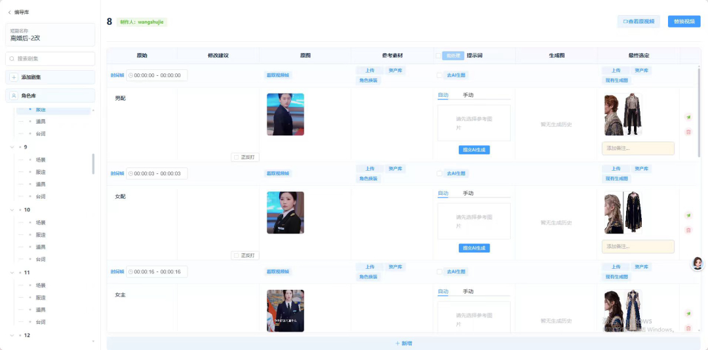

Process · How I Work
我如何 工作
三步走：拆解 —— 把目标拆成镜头与提示词；快跑 —— 小步出样片快速迭代； 落地 —— 控制预算与周期，把成片准时交付。 每一步都有明确的交付物与验收点，避免“做着做着就跑偏”。
01
拆解 —— 先把话说清楚
拿到剧本或需求，先不急着出画面：理清故事线、人物目标与情绪节奏，把文本拆成可拍摄的场次与镜头， 同步确认预算、周期与平台规格。这一步做完，五张表就已经成型，后面只是执行。
- 剧本拆解表
- 人物 / 场景资产表
- 分镜执行表
- 预算与周期
02
快跑 —— 用小样片试错
先做单镜头测试：光影、材质、角色一致性、运镜与节奏各跑一遍，用最小成本找到“对的那一版”， 再横向复制到整场戏。风格规范与提示词库在这步定稿，避免后期反复。
- 镜头测试
- 角色一致性校准
- 光影与调色 LUT
- 提示词库沉淀
03
落地 —— 按时交片
批量生成与实拍并行推进，剪辑、配音、字幕与混音按平台规格收口； 交付前用成片质检表逐项验收，有问题当场回炉，不留尾巴。
- 批量生成
- 剪辑与调色
- 声音与字幕
- 成片质检表



常见情况：预算不够拍不起？用 AI 补足产能。周期太赶？生成与实拍并行跑。 风格不稳定？用统一的视觉规范与提示词库把质感锁住。
© 2026 AI·DIRECTOR — AI 执行导演作品集
Process · Three Steps